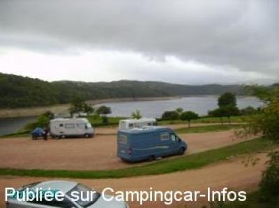
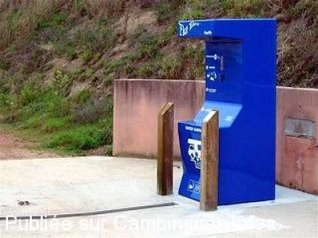

ASN = Aire de services avec stationnement nuit possible de :
VILLEREST
(N° 853)
Accès/adresse :
Route de Seigné D18
Aire du Grézelon
42300 VILLEREST
Aire du Grézelon
42300 VILLEREST
Latitude : (Nord) 45.98607° Décimaux ou 45° 59′ 9′′
Longitude : (Est) 4.04298° Décimaux ou 4° 2′ 34′′
Tarif : 2015
Stationnement : 5,50 €
Services : 4 €
Taxe de séjour :0,20 €
Passage d'un agent pour encaisser
Type de borne : FLOT BLEU
Services :


Restauration
Jeux
Tous commerces à environ 1 km
Autres informations :
Services du 1/05 au 30/09
15 emplacements délimités au sol

Le 18/04/2009 par Daniel

Le 02/03/2008 par Milo
de
louky23
le 05/05/2016 :
De passage à VILLEREST; site agréable attention télé captée que sur certains emplacements nous avons du changer de place pour obtenir la télé. Petite ballade au bord du lac. ( Le tour complet du lac 34 kms) centre ville médiévale à 1 km environ.Aire calme et agréable.
LOUKY23
De passage à VILLEREST; site agréable attention télé captée que sur certains emplacements nous avons du changer de place pour obtenir la télé. Petite ballade au bord du lac. ( Le tour complet du lac 34 kms) centre ville médiévale à 1 km environ.Aire calme et agréable.
LOUKY23
de
virginie
le 31/08/2014 :
c'est la 2ème fois que nous y restons, aire calme avec belle vue sur le lac
avons fait pedalo
c'est la 2ème fois que nous y restons, aire calme avec belle vue sur le lac
avons fait pedalo
de
Cathy
le 18/08/2014 :
Très belle aire bien située avec vue sur le lac. Dommage que la borne flot bleu ne fonctionne qu'en basse saison car si l'on a un problème de batterie, impossible de recharger.
Très belle aire bien située avec vue sur le lac. Dommage que la borne flot bleu ne fonctionne qu'en basse saison car si l'on a un problème de batterie, impossible de recharger.
de
laindith
le 14/11/2013 :
de passage ce 14 novembre 2013, nous découvrons cette aire magnifique.
jolie vue sur le lac.
emplacements marqués au sol.
toutes nos félicitations et un grand merci à la municipalité.
si seulement on pouvait trouver cela partout !!!
gratuite à cette période
de passage ce 14 novembre 2013, nous découvrons cette aire magnifique.
jolie vue sur le lac.
emplacements marqués au sol.
toutes nos félicitations et un grand merci à la municipalité.
si seulement on pouvait trouver cela partout !!!
gratuite à cette période
de
patrick
le 30/06/2013 :
De passage nous avons passé une nuit très calme sur cette aire,au-dessus du lac.Très bien aménagée à proximité d'un petit restaurant et d'un centre aquatique avec de nombreux jeux(toboggans à eau, golf).Une aire comme on voudrait en trouver plus souvent.
De passage nous avons passé une nuit très calme sur cette aire,au-dessus du lac.Très bien aménagée à proximité d'un petit restaurant et d'un centre aquatique avec de nombreux jeux(toboggans à eau, golf).Une aire comme on voudrait en trouver plus souvent.
de
GT
le 06/09/2012 :
une quinzaine de places a coté du barrage .belle vue sur le lac. 5 euros la nuit avec services du 1 mai au 30 septembre.
du 1 octobre au 30 avril service avec distribution de jetons, et stationnement gratuit.
attention l a l alimentation en eau se trouve au dessus da la cuvette WC
une quinzaine de places a coté du barrage .belle vue sur le lac. 5 euros la nuit avec services du 1 mai au 30 septembre.
du 1 octobre au 30 avril service avec distribution de jetons, et stationnement gratuit.
attention l a l alimentation en eau se trouve au dessus da la cuvette WC
de
Jaquetroc
le 15/06/2012 :
Magnifique séjour ! Nous avons déserté l'aire un soir pour aller manger dans un bon restaurant : le château de champlong. Dans cette région où les grands chefs sont légion, nous avons fait un superbe repas à un prix abordable. Parking à proximité.
Magnifique séjour ! Nous avons déserté l'aire un soir pour aller manger dans un bon restaurant : le château de champlong. Dans cette région où les grands chefs sont légion, nous avons fait un superbe repas à un prix abordable. Parking à proximité.
de
Denis63
le 13/06/2011 :
belle aire de service , bien située, calme avec vue sur le lac, belle balde a faire autour du lac,espace aquatique pour les enfants, village médiéval agréable. Seul probleme le moyen de paiement , un agent roannais vient taper a votre porte vers 8 h du mat c'est un peu tôt quand on est en vacances. A conseiller le resto juste à coté de l'aire, patrons trés sympa, bonne cuisine, repas copieux, ils viennent juste de reprendre l'affaire et pensent ouvrir une épicerie prochainement trés pratique pour les campingcaristes car pas de commerce a villeret, juste une boulangerie qui était fermé lors de notre passage. A recommander
belle aire de service , bien située, calme avec vue sur le lac, belle balde a faire autour du lac,espace aquatique pour les enfants, village médiéval agréable. Seul probleme le moyen de paiement , un agent roannais vient taper a votre porte vers 8 h du mat c'est un peu tôt quand on est en vacances. A conseiller le resto juste à coté de l'aire, patrons trés sympa, bonne cuisine, repas copieux, ils viennent juste de reprendre l'affaire et pensent ouvrir une épicerie prochainement trés pratique pour les campingcaristes car pas de commerce a villeret, juste une boulangerie qui était fermé lors de notre passage. A recommander
de
Patrice
le 23/10/2010 :
Cette aire est superbement bien aménagée et représente une excellente étape routière juste à proximité de Roanne. Pour info, le prix est désormais de 5€ payable au minigolf, juste à proximité. §
Cette aire est superbement bien aménagée et représente une excellente étape routière juste à proximité de Roanne. Pour info, le prix est désormais de 5€ payable au minigolf, juste à proximité. §
de
Flo et Pas
le 16/08/2010 :
J'ai été agréablement surprise par cette aire : vue superbe. A ne pas rater : une visite au village médiéval à faire à pied (ça grimpe, attention), au musée et à la galerie d'arts de Chris Clavier qui nous a bien reçus. De plus, un resto à faire à la base nautique (à 300 mètres environ de l'aire) : pas cher et excellent, le resto du lac de Villerest. Seul bémol, pas d'approvisionnement d'eau possible en période pas beaucoup de places ; après 20H plus de place. Sinon prix correct : 5€ et WC propres. §
J'ai été agréablement surprise par cette aire : vue superbe. A ne pas rater : une visite au village médiéval à faire à pied (ça grimpe, attention), au musée et à la galerie d'arts de Chris Clavier qui nous a bien reçus. De plus, un resto à faire à la base nautique (à 300 mètres environ de l'aire) : pas cher et excellent, le resto du lac de Villerest. Seul bémol, pas d'approvisionnement d'eau possible en période pas beaucoup de places ; après 20H plus de place. Sinon prix correct : 5€ et WC propres. §
de
BOURGEOIS
le 08/07/2009 :
Cette aire est payante du 1er Juin au 30 Septembre à savoir 4 € pour le stationnement. Pour les services il vous en coutera 4 € supplémentaire. Les WC sont publics, donc ouvert à tous!!!!
Cette aire est payante du 1er Juin au 30 Septembre à savoir 4 € pour le stationnement. Pour les services il vous en coutera 4 € supplémentaire. Les WC sont publics, donc ouvert à tous!!!!
de
Didier du 71
le 05/08/2007 :
De passage dans cette région pour découvrir le Lac de VILLEREST, nous avons été agréablement surpris par le site de cette aire de service, une vue superbe, un lieu très calme où vous pouvez rester 48 heures. Toutes les commodités à proximité, la plage pour la baignade n'est pas très loin. Nous étions une vingtaine de CC, sur plusieurs niveaux, c'est à dire que tout le monde à la même vue ! C'est très bien conçu et certaines municipalités devraient en prendre de la graine !
Un endroit où l'on revient volontiers, à conseiller pour nos amis Camping-Caristes!
De passage dans cette région pour découvrir le Lac de VILLEREST, nous avons été agréablement surpris par le site de cette aire de service, une vue superbe, un lieu très calme où vous pouvez rester 48 heures. Toutes les commodités à proximité, la plage pour la baignade n'est pas très loin. Nous étions une vingtaine de CC, sur plusieurs niveaux, c'est à dire que tout le monde à la même vue ! C'est très bien conçu et certaines municipalités devraient en prendre de la graine !
Un endroit où l'on revient volontiers, à conseiller pour nos amis Camping-Caristes!